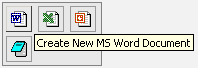
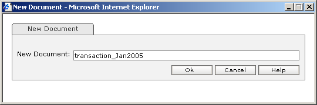

| How to create new document? |
- Please note that this funcionality is accessible only through Microsoft Internet Explorer.
- In Folder/Document List click the folder where you would like to create new document.
- Click on the 'Create New Document' icon [ ]
|
- It is possible to create a new MSWord document, a new MSExcel document, a new MSPowerPoint presentation or a new Text document (Refer the figure below in clockwise sense).
- Click on the document type icon shown below to start the procedure.
|
|

|
- The user will be prompted with the new document window shown below.
|
 |
- Enter the name of the document.
- Press 'Ok' to create new document.
- Enter your network id and password when prompted to do so.
- The application corresponding to the selected document type will be initiated.
- The user can then proceed to create his/her document and save it.
- Press 'Cancel' to abort creating new document.
|
| |
|
Not able to create new document? |
- Insufficient rights to create new document in the selected location.
- Try creating new document in your Home Folder.
- Or Contact system Administrator.
|